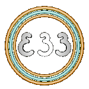

Llevamos una década desarrollando proyectos y nunca hemos parado de estudiar y adaptarnos a los nuevos recursos. Nuestra especialidad es el diseño de programas para transmisiones en directo y la realización de los mismos. Nos encargamos del diseño de todos los recursos necesarios y los adecuamos a las características técnicas que requiera el proyecto.
Nuestra prioridad es trabajar con aplicaciones de código abierto siempre que sea posible. A diferencia de lo que se pueda pensar en un principio, los proyectos finalizados alcanzan una solidez que ofrece al usuario la tranquilidad de controlar un proyecto estable y equilibrado con una calidad profesional.
Siempre estamos abiertos a escuchar vuestros proyectos, y en asesoraros si fuera posible, pero no desarrollamos todos los proyectos que nos llegan por mucho dinero que ofrezcan para el desarrollo. Tenemos que sentirnos afinados con el proyecto para poder aceptar su desarrollo. En Estudio33 sólo abordamos un proyecto al mismo tiempo.
- Podemos dejar tu OBS totalmente optimizado para tu producción.
- Dependiendo de la complejidad del proyecto también programamos la botonera para el control de OBS.
- Si el proyecto lo hemos desarrollado en Estudio33, contamos con los medios necesarios para producir la realización en remoto a 1920x1080 (full HD) a 60fps.
Podemos encargarnos de la personalización de:
- Diseño de transiciones.
- Diseño y gestión de sonido.
- Diseño de tercios/rótulos.
- Diseño de intros/salidas.
- Diseño de publicidad emergente.
- Colecciones de escenas.
- Efectos de animación.
- Integración de elementos de proveedores externos (chat, teléfono, etc...).
En definitiva podemos producir transmisiones en vivo desde el principio de su desarrollo hasta su finalización, y más allá, la realización, todo ello de forma sólida y con calidad profesional.
PROYECTOS QUE ENCAJAN CON NUESTRO ESPÍRITU.
- Programa en directo.
- Eventos en directo.
- Seminarios y clases online.
- Realización de directos (producidos anteriormente por nosotros).
- Edición de video (podemos hacerlo, pero solemos descartarlos porque nos aburre).
Aquí en la web podrás descargar algunos recursos de OBS totalmente gratis. Suscríbete a nuestra newsletter, tienes nuestro compromiso de no bombardearte el correo, pero te mantendremos al tanto si subimos algún video a YouTube o hemos actualizado alguno de los plugins de OBS.
En Estudio33 somos obsesivos con los compromisos adquiridos y su cumplimiento. Detestamos la mentira y el engaño, pero admiramos la buena voluntad y el ánimo de cooperación.
Envía un correo a Simón del Museo para plantearle tu idea, con que medios cuentas y tus necesidades. Contesta siempre.